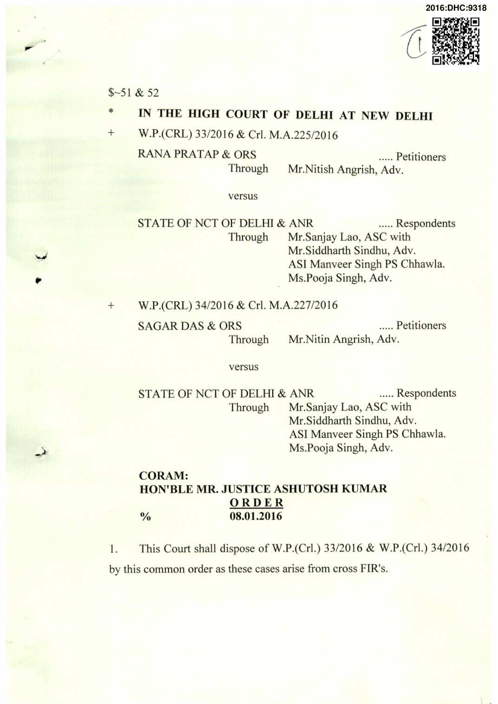

- The petitioners in W.P. (Crl.) 33/2016, seek quashing of FIR No. 269/2015 (PS. Chhawala) instituted for offence under Sections 147/149/308/323/34 of the IPC. On the other hand, the Petitioners in W.P. i,r n (Crl.) 34/2016, seek quashing FIR No. 270/2015 (PS. Chhawala) instituted under Sections 147/149/308/34 of the IPC.
- Both the parties seek quashing of the aforementioned FIR's on the strength of an amicable settlement having been arrived at between them.
- The abovementioned FIR came to be registered due to a conflict ^ which had occurred between the parties on 07.05.2015. The parties in the aforementioned petitions are known to each other as they are neighbours. It is submitted that the dispute arose between parties due to certain water boring work which was being undertaken by the petitioners in W.P. (Crl.) 34/2016. The petitioners in W.P. (Crl.) 33/2016 are said to have objected to the said work and attempted to stop the same. This led to an altercation between the parties, pursuant to which the subject FIR's came to be registered.
- 5. It is submitted by the counsels, on behalf of the parties, that due to intervention of common friends and relatives, the parties have agreed to amicably settle all their disputes and differences. In pursuance thereto, the parties had also approached the Delhi Government Mediation and Conciliation Centre, Rohini, New Delhi for resolution of their disputes where both the parties entered into an amicable settlement.
- The parties are present in Court.
- The investigation in the matter is still continuing and the chargesheets have not yet been filed.
- It is submitted by the counsels of the parties that in view of all the disputes between the parties having been amicably settled, no grievance now remains to be adjudicated between them. In view thereof, the parties have approached this court to seek permission to put an end to the cases registered against each other.
- It is further submitted that the parties undertake to remain bound by the terms and conditions of the settlement having been arrived at and have also agreed to maintain good and cordial relations with each other.
- Upon a conspectus of the facts and circumstances, this Court is of the opinion that the nature of the disputes between the parties are completely interpersonal and have been completely redressed. Furthermore no fruitful purpose would be served in any further prosecution. In view of the aforementioned facts, this Court is inclined to quash the subject FIRs.
- In Gian Singh vs. State of Punjab & Another, (2012) 10 SCC 303, the Supreme Court has held that cases which are not compoundable under Section 320 of the Cr.P.C. could also be quashed, when continuation of any criminal proceeding would be an exercise in futility and where justice demands that the dispute between the parties should be put to an end and peace is restored. But ending of such criminal proceedings could only be ordered for securing the ends of justice.
- The Supreme Court has further observed in Gian Singh vs. State of Punjab & Another (Supra): No doubt, crimes are acts which have harmful effect on the public and consist in wrongdoing that seriously endangers and threatens the well-being of the society and it is not safe to leave the crime-doer only because he and the victim have settled the dispute amicably or that the victim has been paid compensation, yet certain crimes have been made compoundable in law, with or without the permission of the court. In respect of serious offences like murder, rape, dacoity, etc., or other offences of mental depravity under IPC or offences of moral turpitude under special statutes, like the Prevention of Corruption Act or the offences committed by public servants while working in that capacity, the settlement between the offender and the victim can have no legal sanction at all. However, certain offences which overwhelmingly and predominantly bear civil flavour having arisen out of civil, mercantile, commercial, financial, partnership or such like transactions or the offences arising out of matrimony, particularly relating to dowry, etc. or the family dispute, where the wrong is basically to the victim and the offender and the victim have settled all disputes between them amicably, irrespective of the fact that such offences have not been made compoundable, the High Court may within the framework of its inherent power, quash the criminal proceeding or criminal complaint or FIR if it is satisfied that on the face of such settlement, there is hardly any likelihood of the offender being convicted and by not quashing the criminal proceedings, justice shall be casualty and ends of justice shall be defeated. The above list is illustrative and not exhaustive. Each case will depend on its own facts and no hard-and-fast category can be prescribed." [Refer to B.S. Jos hi, (2003) 4 SCC 675; Nikhil Merchant, (2008) 9 SCC 677 and Manoj Sharma, (2008) 16 SCC I.]
- In Narimler Singh & Ors. vs. State of Punjab & Anr. (2014) 6 SCC 466, the pertinent observations of the Apex Court are as under:-
- In view of the aforesaid discussion, sum up and lay down the following principles by which the High Court would be guided in giving adequate treatment to the settlement between the parties and exercising its power under Section 482 of the Code while accepting the settlement and quashing the proceedings or refusing to accept the settlement with direction to continue with the criminal proceedings: 29.1 Power conferred under Section 482 of the Code is to be distinguished from the power which lies in the Court to compound the offences under Section 320 of the Code No doubt under Section 482 of the Code, the High Court has inherent power to quash the criminal proceedings even in those cases which are not compoundable, where the parties have settled the matter between themselves. However, this power is to be exercised sparingly and with caution. 29.2. When the parties have reached the settlement and on that basis petition for quashing the criminal proceedings is filed, the guidmg factor in such cases would be to secure: (i) ends of justice, or (ii) to prevent abuse of the process ofany court. While exercising the power the High Court is to form an opinion on either of the aforesaid two objectives. 29.3. Such a power is not to be exercised in those prosecutions TMch involve heinous and serious offences of mental depravity or offences like murder, rape, dacoity, etc. Such offences are not private in nature and have a serious impact on society. Similarly, for the offences alleged to have been committed under special statute like the Prevention of Corruption Act or the offences committed by public servants while working in that capacity are not to be quashed merely on the basis of compromise between the victim and the offender. 29.4. On the other hand, those criminal cases having overwhelmingly and predominantly civil character, particularly _ those arising out of commercial transactions or arising out of matrimonial relationship or family disputes should be quashed when the parties have resolved their entire disputes among themselves. 29.5. While exercising its powers, the High Court is to examine as to whether the possibility of conviction is remote and bleak and continuation of criminal cases would put the accused to great oppression and prejudice and extreme injustice would be caused to him by not quashing the criminal cases. 29.6. Offences under Section 307 IPG would fall in the category of heinous and serious offences and therefore are to be generally treated as crime against the society and not against the individual alone. However, the High Court would not rest its decision merely because there is a mention ofSection 307 IPG in the FIR or the charge is framed under this provision. It would be open to the High Court to examine as to whether incorporation of Section 307 IPG is there for the sake of it or the prosecution has collected sufficient evidence, which if proved, would lead to proving the charge under Section 307 IPG. For this purpose, it would be open to the High Court to go by the nature of injury sustained, whether such injury is inflicted on the vital/delegate parts of the body, nature of weapons used, etc. Medical report in respect of injuries suffered by the victim can generally be the guiding factor. On the basis of this prima facie analysis, the High Court can examine as to whether there is a strong possibility of conviction or the chances of conviction are remote and bleak. In the former case it can refuse to accept the settlement and quash the criminal proceedings whereas in the latter case it would be permissible for the High Court to accept the plea compounding the offence based on complete settlement between the parties. At this stage, the Court can also be swayed by the fact that the settlement between the parties is going to result in harmony between them which may improve their future relationship. 29.7. While deciding whether to exercise its power under Section 482 of the Code or not, timings of settlement play a crucial role. Those cases where the settlement is arrived at immediately after the alleged commission of offence and the matter is still under investigation, the High Court may be liberal in accepting the settlement to quash the criminal proceedings/investigation. It is because of the reason that at this stage the investigation is still on and even the chargesheet has not been filed. Likewise, those cases where the charge is framed but the evidence is yet to start or the evidence is still at infancy stage, the High Court can show benevolence in exercising its powers favourably, but after prima facie assessment of the circumstances/material mentioned above. On the other hand, where the prosecution evidence is almost complete or after the conclusion of the evidence the matter is at the stage of argument, normally the High Court should refrain from exercising its power under Section 482 of the Code, as in such cases the trial court would be in a position to decide the case finally on merits and to come to a conclusion as to whether the offence under Section 307 IPC is committed or not. Similarly, in those cases where the conviction is already recorded by the trial court and the matter is at the appellate stage before the High Court, mere compromise between the parties would not be a ground to accept the same resulting in acquittal of the offender who has already been convicted by the trial court. Here charge is proved under Section 307 IPC and conviction is already recorded of a heinous crime and, therefore, there is no question of sparing a convict found guilty of such a crime."
- Thus, the inherent powers of the High Court, having a wide plenitude could be used for quashing the FIR's for securing the ends of justice and to prevent the abuse of the process of the court. V J
- The subject FIR's (FIR Nos. 269/2016 & 270/2016, PS. Chhawala) and the emanating proceedings thereof are, for the reasons aforestated, quashed. ^
- The petitior^is disposed of in terms of the aforesaid
ASHUTOSH KUMAR, J JANUARY 08, 2016/ns